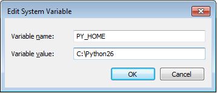

How to add to the PYTHONPATH in Windows, so it finds my modules/packages?
I have a directory which hosts all of my Django apps (C:\My_Projects). I
want to add this directory to my PYTHONPATH so I can call the apps directly.
I tried adding C:\My_Projects\; to my Windows Path variable from the
Windows GUI (My Computer > Properties > Advanced System Settings >
Environment Variables). But it still doesn't read the coltrane module and
generates this error:
Error: No module named coltrane
Answer
You know what has worked for me really well on windows.
`My Computer > Properties > Advanced System Settings > Environment Variables
`
Just add the path as C:\Python27 (or wherever you installed python)
OR
Then under system variables I create a new Variable called PythonPath. In
this variable I have C:\Python27\Lib;C:\Python27\DLLs;C:\Python27\Lib\lib-
tk;C:\other-folders-on-the-path

This is the best way that has worked for me which I hadn't found in any of the docs offered.
EDIT: For those who are not able to get it, Please add
C:\Python27;
along with it. Else it will never work.
Suggest
Windows 7 Professional I Modified @mongoose_za's answer to make it easier to change the python version:
- [Right Click]Computer > Properties >Advanced System Settings > Environment Variables
- Click [New] under "System Variable"
- Variable Name: PY_HOME, Variable Value:C:\path\to\python\version 
- Click [OK]
- Locate the "Path" System variable and click [Edit]
- Add the following to the existing variable:
%PY_HOME%;%PY_HOME%\Lib;%PY_HOME%\DLLs;%PY_HOME%\Lib\lib-tk; 
- Click [OK] to close all of the windows.
As a final sanity check open a command prompt and enter python. You should see
>python [whatever version you are using]
If you need to switch between versions, you only need to modify the PY_HOME variable to point to the proper directory. This is bit easier to manage if you need multiple python versions installed.